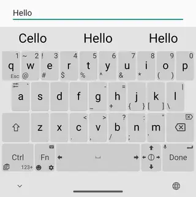
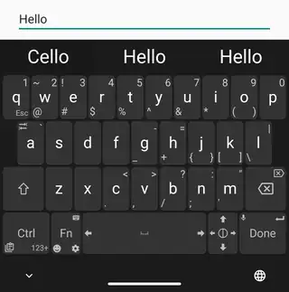

الكيبورد المفاجئ
قراءة وكتابة
الميزة الرئيسة هي إمكانية كتابة المزيد من الأحرف عن طريق تمرير المفاتيح نحو الزوايا. صُمم هذا التطبيق في الأصل للمبرمجين الذين يستخدمون ترمكس. أصبح الآن مثاليًّا للاستخدام اليومي. هذا التطبيق خالٍ من الإعلانات ومفتوح المصدر.
✓ ترخيص مفتوح (GPL-3.0-only) · آخر تحديث: 2026-11-17
2.2.1الإصدار
832 KBالحجم
GPL-3.0-onlyالرخصة
Open in Kanzتحميل APK (832 KB)
Download APK
SHA-256: 14296902591e5e3c8f9040b3fc8a309d0071cd0fa4085c159f1187a48722881d


امسح الكود لفتح صفحة التطبيق
Scan to open this app page
لو كنز مش متثبت عندك: نزّل متجر كنز.
Not installed? Get the Kanz store.